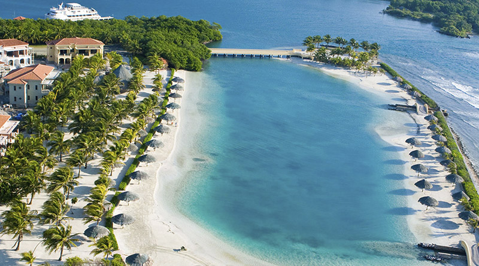

Con sus Mar y Playa sorprendentes y Arrecife coral, Hoteles de lujo

-Buceo y Snorkel: Roatán cuenta con uno de los mejores sitios de buceo del mundo gracias a la Barrera de Coral Mesoamericana. Explora arrecifes, cuevas y bancos de arena en West Bay, West End, y sitios más remotos como Black Rock.
-Playas imperdibles: West Bay Beach es la más popular, conocida por sus aguas tranquilas y blancas arenas. Otras opciones incluyen Tabyana Beach, Half Moon Bay y la más tranquila Camp Bay Beach.
Cultura Garífuna: Visita el pueblo de Punta Gorda para experimentar la cultura garífuna, su música y gastronomía.